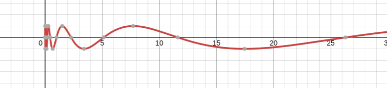

Evaluacion matematica.
Matematicas (Intervalos)
Dibujar en la recta real los siguientes intervalos.
[-2,3] = {𝒳∈R/-2 𝒳≤3}
(1,3] = (-2,4] ⇒ {𝒳∈R/|x-1|≥3}
Matematicas (Geometria)
Realizar el siguiente problema:
Dado un paralelogramo ABCD con lados AB = DC; AD = CB encontrar EC donde el angulo DEA es recto. EA = 1; AB = 2; DAB=135
Matematicas (Funciones)
Encontrar f(1257.76) en la siguiente funcion:
f(x) = sen(ln(xe√2))

Para buscar soluciones a posibles problemas geometricos haga click aqui.
Para resolver otros posibles problemas relacionados a funciones, haga click aqui.